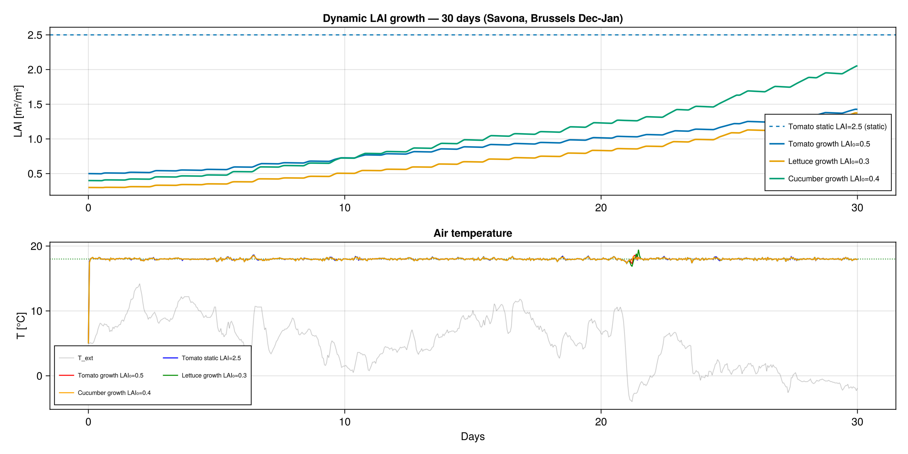
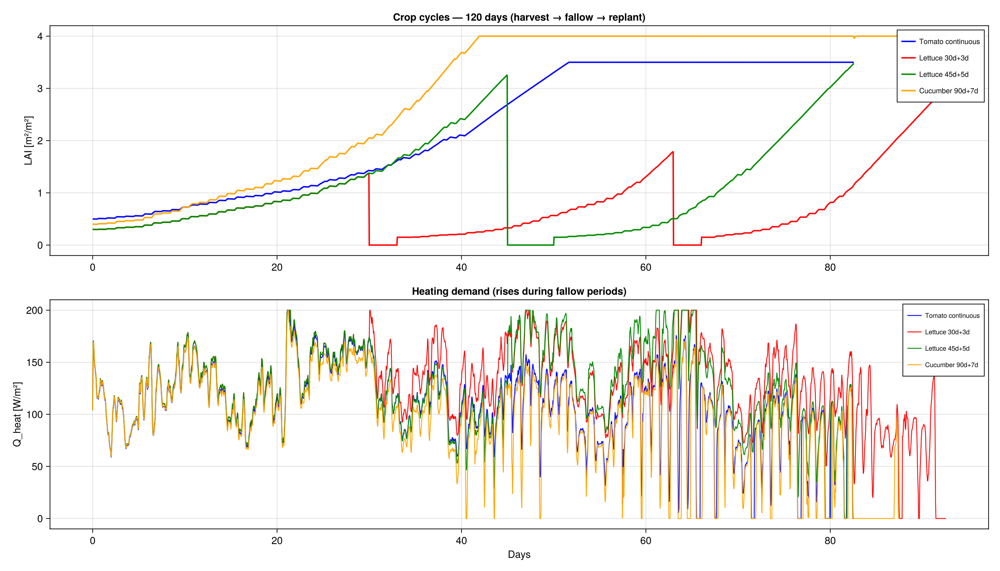

Tutorial: Crop Growth & Harvest Cycles
GreenhousesJL can simulate dynamic crop growth coupled to the greenhouse energy balance. The LAI evolves over time based on photosynthesis, and harvest/replanting cycles can be programmed.
Static vs dynamic LAI
# Static LAI (constant, no growth)
crop = CropModel(LAI=2.5)
# Dynamic LAI (Vanthoor growth model)
crop = CropModel(LAI_0=0.5, dynamic_LAI=true)
With dynamic_LAI=true, three new state variables are added:
C_Buf, carbohydrate buffer (photosynthesis accumulates here) [mg CH₂O/m²]C_Leaf, leaf biomass [mg CH₂O/m²]C_Stem, stem biomass [mg CH₂O/m²]
The LAI is computed as: LAI = SLA × C_Leaf
Growth model (simplified Vanthoor 2011)
Sunlight → Photosynthesis → C_Buf (buffer)
↓
┌────────────┼────────────┐
↓ ↓ ↓
C_Leaf C_Stem Respiration
(leaves) (stems) (CO₂ loss)
↓
LAI = SLA × C_LeafGrowth rates depend on temperature:
g_T = 0.047 × T_canopy[°C] + 0.06(faster at higher temperatures)- Growth only occurs when
C_Buf > C_Buf_min(buffer not empty) - Leaf pruning when
LAI > LAI_max
Harvest / replanting cycles
For crops that are harvested and replanted (lettuce, basil), set cycle_days:
# Lettuce: harvest every 30 days, 3 days bare soil before replanting
crop = LettuceCrop(cycle_days=30, fallow_days=3)
# Cucumber: harvest every 90 days, 7 days fallow
crop = CucumberCrop(cycle_days=90, fallow_days=7)
# No cycle (continuous growth until LAI_max)
crop = CropModel(LAI_0=0.5, cycle_days=0)During the fallow period:
- LAI = 0 (bare soil, no crop transpiration)
- Heating demand increases (no crop insulation)
- Biomass decays to zero (plant removed)
At replanting: C_Leaf resets to the initial value (new seedlings).
Example: 120-day simulation with cycles
using GLMakie
using GreenhousesJL
tmy = load_tmy("path/to/10Dec-22Nov.txt")
configs = [
("Tomato continuous", CropModel(LAI_0=0.5, cycle_days=0)),
("Lettuce 30d+3d", LettuceCrop(cycle_days=30, fallow_days=3)),
("Cucumber 90d+7d", CucumberCrop(cycle_days=90, fallow_days=7)),
]
for (name, crop) in configs
p = SavonaParams(tmy; with_walls=true, crop=crop)
u0 = initial_state(p)
sol = solve(ODEProblem(greenhouse_rhs!, u0, (0.0, 120*86400.0), p),
Tsit5(); reltol=1e-6, saveat=3600.0)
plot_results(sol, p; save_path="$(name).png")
end
The top panel shows LAI evolution with visible harvest/replanting cycles for lettuce (red, every 33 days) and cucumber (orange, at day 97). The bottom panel shows heating demand spiking during fallow periods when no crop insulation is present.
Growth parameters by species
| Parameter | Symbol | Tomato | Lettuce | Cucumber | Unit |
|---|---|---|---|---|---|
| Initial LAI | LAI_0 | 0.5 | 0.3 | 0.4 | m²/m² |
| Max LAI | LAI_max | 3.5 | 5.0 | 4.0 | m²/m² |
| Specific leaf area | SLA | 2.66e-5 | 2.85e-5 | 3.50e-5 | m²/mg |
| Leaf growth rate | rg_Leaf | 0.095 | 0.120 | 0.110 | mg/(m²·s) |
| Stem growth rate | rg_Stem | 0.074 | 0.048 | 0.065 | mg/(m²·s) |
| Cycle length | cycle_days | 0 (continuous) | 30 | 120 | days |
| Fallow period | fallow_days | — | 3 | 7 | days |
Querying the cycle phase
phase, day = cycle_phase(t_seconds, crop)
# phase = :growing or :fallow
# day = days into current phase
LAI_now = get_LAI(crop, C_Leaf, t_seconds)
# Returns 0 during fallow, SLA × C_Leaf during growing